<meta charset="utf-8"><title>11/22決勝後のコラム note貼り付け</title>
<style>
/* one column of numbered paste steps; text steps vs image steps differ by marker */
:root{--bg:#F5F4F0;--card:#FFFFFF;--ink:#1D2321;--mute:#5F665F;--line:#DCDAD2;--btn:#1F5FBF;--btnok:#2E8B4F;--img:#E9F3EC;--imgink:#22663B;--sans:'IBM Plex Sans JP','Hiragino Sans','Noto Sans JP',sans-serif}
@media (prefers-color-scheme:dark){:root:not([data-theme="light"]){--bg:#171A19;--card:#202423;--ink:#ECEDE8;--mute:#A3AAA2;--line:#343937;--btn:#4D8BE6;--btnok:#3FA866;--img:#1E2C23;--imgink:#8FD3A6;color-scheme:dark}}
:root[data-theme="dark"]{--bg:#171A19;--card:#202423;--ink:#ECEDE8;--mute:#A3AAA2;--line:#343937;--btn:#4D8BE6;--btnok:#3FA866;--img:#1E2C23;--imgink:#8FD3A6;color-scheme:dark}
body{background:var(--bg);color:var(--ink);font-family:var(--sans);font-size:15px;line-height:1.75;padding:20px 16px 60px}
main{max-width:680px;margin:0 auto;display:grid;gap:28px}
header h1{font-size:22px;margin:0 0 6px;text-wrap:balance}
header p{margin:0;color:var(--mute);font-size:14px}
nav{display:flex;gap:8px;flex-wrap:wrap;margin-top:12px}
nav a{border:1px solid var(--line);border-radius:999px;padding:4px 14px;color:var(--ink);text-decoration:none;font-size:14px;background:var(--card)}
.part h2{font-size:18px;line-height:1.5;margin:0 0 12px;text-wrap:balance;display:flex;gap:10px;align-items:baseline;flex-wrap:wrap}
.tag{font-size:13px;background:var(--ink);color:var(--bg);border-radius:6px;padding:1px 9px}
.steps{list-style:none;margin:0;padding:0;display:grid;gap:12px}
.st{background:var(--card);border:1px solid var(--line);border-radius:12px;padding:12px;min-width:0}
.hd{display:flex;align-items:center;gap:8px;margin-bottom:8px}
.no{width:26px;height:26px;border-radius:50%;background:var(--btn);color:#fff;display:inline-flex;align-items:center;justify-content:center;font-size:13px;font-weight:700;flex:0 0 26px}
.im .no{background:var(--btnok)}
.hd em{font-style:normal;font-size:12px;background:var(--img);color:var(--imgink);border-radius:6px;padding:0 8px}
.bx{font-size:13.5px;line-height:1.7;border:1px solid var(--line);border-radius:8px;padding:8px 10px;max-height:110px;overflow:auto;overflow-wrap:anywhere}
.bx.tall{max-height:150px}.bx p{margin:0 0 6px}.bx h2{font-size:14px;margin:8px 0 4px}.bx a{color:var(--btn)}
.st img{display:block;width:100%;max-width:100%;border:1px solid var(--line);border-radius:8px}
.sub{font-size:12.5px;color:var(--mute);margin:6px 0 0}
.cp{width:100%;margin-top:8px;padding:12px;border:0;border-radius:10px;background:var(--btn);color:#fff;font:600 15px var(--sans);cursor:pointer}
.cp.ok{background:var(--btnok)}.cp.dl{background:var(--btnok)}.cp:focus-visible{outline:3px solid var(--ink);outline-offset:2px}
.xh{font-size:15px;margin:20px 0 10px}
.fb{font-size:13px;line-height:1.7;margin:8px 0 0;padding:8px 10px;border-radius:8px;background:var(--img);color:var(--imgink)}
.opts{display:grid;grid-template-columns:repeat(auto-fill,minmax(240px,1fr));gap:10px}
.opt{min-width:0}.opt img{display:block;width:100%;border:1px solid var(--line);border-radius:8px}
.ol{display:flex;align-items:center;gap:8px;margin-top:6px}.ol b{font-size:13px;flex:0 0 auto}.ol .on{font-size:12.5px;color:var(--mute);flex:1;min-width:0}.ol .cp{width:auto;flex:0 0 auto;padding:9px 14px}.ol .cp{margin:0;padding:9px}
.toast{font-size:13px;color:var(--mute);margin-top:6px}
</style>
<main><header><h1>11/22決勝後のコラム note貼り付け</h1><p>いま公開済みは8本です。青い番号は文章、緑は画像です。</p><nav><a href="#p1">1</a><a href="#p2">2</a><a href="#p3">3</a><a href="#p4">4</a><a href="#p5">5</a><a href="#p6">6</a><a href="#p7">7</a><a href="#p8">8</a></nav></header><section class="part" id="p1"><h2><span class="tag">OFF GRID</span>フェルスタッペン「F1で見たことがない」　首位交代35回のベガス制す</h2><p class="sub">サイトに公開：16:29</p><ol class="steps">
<li class="st im"><div class="hd"><span class="no">1</span><b>見出し画像</b><em>画像</em></div>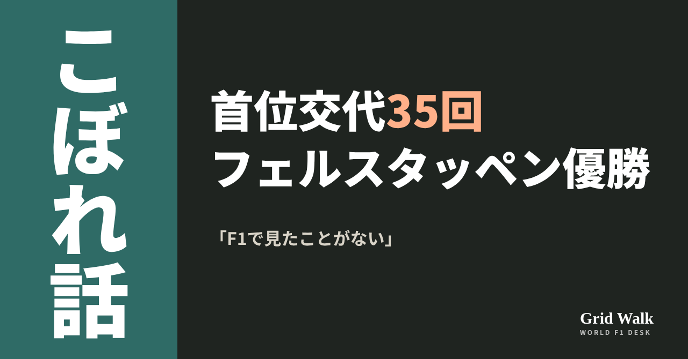<button class="cp dl" data-img="img/verstappen-wins-vegas-35-lead-changes-20261122.png" data-name="verstappen-wins-vegas-35-lead-changes-20261122_見出し画像.png">ダウンロード</button></li>
<li class="st"><div class="hd"><span class="no">2</span><b>タイトル</b></div><div class="bx" id="p1t">フェルスタッペン「F1で見たことがない」　首位交代35回のベガス制す</div><button class="cp" data-plain="p1t">タイトルをコピー</button></li>
<li class="st"><div class="hd"><span class="no">3</span><b>本文</b></div><div class="bx tall" id="p1r"><p>50周のレースで、首位が35回入れ替わりました。第21戦ラスベガスGPを制したのは、ポールポジションから出たレッドブルのマックス・フェルスタッペンです。イギリスのSky Sportsによると、追い抜きは全部で352回ありました。</p><p>ポールが決まった予選のコラムへの案内と、元の記事へのリンクはサイトで → <a href="https://f1gridwalk.github.io/lens/verstappen-wins-vegas-35-lead-changes-20261122/?utm_source=note&amp;utm_campaign=verstappen-wins-vegas-35-lead-changes-20261122">https://f1gridwalk.github.io/lens/verstappen-wins-vegas-35-lead-changes-20261122/?utm_source=note&amp;utm_campaign=verstappen-wins-vegas-35-lead-changes-20261122</a></p><blockquote><p>「すごかった。本当に、本当に現実離れしていて、F1で見たことがないものだった、自分でもね」（フェルスタッペン、Sky Sports／イギリス）</p></blockquote><p>F1公式のレースレポートによると、フェルスタッペンはこれまでにラスベガスで2回勝っていて、今回が3勝目です。2位はマクラーレンのランド・ノリスで0.639秒差、3位はオスカー・ピアストリで1.529秒差。4位のメルセデスのアンドレア・キミ・アントネッリまでが、2.574秒の中に入りました（F1公式）。</p><h2>引き離せない長い直線</h2><p>アントネッリがパワーユニットの交換で5グリッド降格となったため、フェルスタッペンの隣にはジョージ・ラッセルが並びました。スタートはフェルスタッペンが先頭を守りましたが、2周目にラッセルが前に出て、最終コーナーでフェルスタッペンが取り返します。</p><p>Sky Sportsは、ストリップ沿いの長い直線でスリップストリームが強く、フェルスタッペンが引き離せなかったと伝えています。ラッセルとアントネッリが何度前に出ても、フェルスタッペンは数コーナーのうちに抜き返しました。</p><blockquote><p>「最初のうちは、電気の使い方がすぐに正しくできていたと思う。でも当然、みんなこっちのやり方を見て学んでいく」「スリップストリームがとても大きくて、引き離すのは無理だった。後ろについてくる車の多さもすごかった」（フェルスタッペン、F1公式）</p></blockquote><h2>最後の周に抜かれたら</h2><p>F1公式によると、フェルスタッペンが気にしていたのは最後の周です。最終周に抜かれると、1コーナーで首位を取り返す時間が残りません。</p><blockquote><p>「一度、コントロールラインの手前で首位に戻れなかったことがあった。だから、あの質問をしたんだ」（フェルスタッペン、F1公式）</p></blockquote><p>F1公式によると48周目、ラッセルがアントネッリを抜こうとしてブレーキをロックさせ、バリアに当たって9位まで下がりました。Sky Sportsによると、最終周の始めにはアントネッリが電気の出し方でミスをして、マクラーレンの2台に抜かれました。F1公式は、ここでフェルスタッペンに、おそらく初めて余裕ができたと書いています。</p><p>フェラーリの2台は接触し、レッドブルのアイザック・ハジャーはフロントウイングを失って入賞を逃しました。アルピーヌは5位と6位に入っています（Sky Sports）。</p><h2>ランキング2位へ、ほぼ手の中</h2><p>アントネッリは11月1日の第19戦メキシコシティGPで3位に入り、残り4戦の時点で王座を決めています（コラム https://f1gridwalk.github.io/lens/antonelli-title-world-20261102/ ）。残る争いの一つがランキング2位です。レース前のF1公式の順位表では、2位フェルスタッペン279点、3位ラッセル262点、4位ハミルトン261点でした。Sky Sportsは、フェルスタッペンが直近6戦で4勝目を挙げ、3位のハミルトンに37点差をつけて、残り2戦でドライバーズ2位をほぼ確実にしたと伝えています。</p><p>編集部としては、この1勝は、電気をどこで使い、どこで抜き返すかの読み合いを制したものだと見ています。次は11月27〜29日の第22戦カタールGPです。ポールが決まった予選の話は、コラム https://f1gridwalk.github.io/lens/vegas-qualifying-verstappen-pole-20261121/ で。</p><p><strong>首位が35回入れ替わったラスベガスの決勝。あなたは面白いレースだと感じましたか、それとも抜きやすすぎると感じましたか？</strong></p><p>━━━━━━━━━━</p><p><strong>F1 Grid Walk では、世界のF1ニュースを毎日日本語でまとめています。</strong></p><p>海外の記事の要約を、毎日載せています。</p><p><a href="https://f1gridwalk.github.io/">https://f1gridwalk.github.io/</a></p><p>ほかの海外記事も読みたい方は、F1 Grid Walkへ。</p><p><a href="https://f1gridwalk.github.io/lens/verstappen-wins-vegas-35-lead-changes-20261122/">https://f1gridwalk.github.io/lens/verstappen-wins-vegas-35-lead-changes-20261122/</a></p><p>━━━━━━━━━━</p><p><a href="https://www.formula1.com/en/latest/article/verstappen-wins-exhilarating-las-vegas-grand-prix-from-norris-and-piastri.2eeBWqekZdir9mdDVK9YVX">出典：F1公式サイト（イギリス）</a></p><p><a href="https://www.skysports.com/f1/news/13615083/las-vegas-gp-max-verstappen-wins-wild-race-as-ferraris-lewis-hamilton-and-charles-leclerc-collide-again">出典：Sky Sports（イギリス）</a></p><p><a href="https://www.formula1.com/en/results/2026/drivers">出典：F1公式サイト（イギリス）</a></p><p><a href="https://formula1.com/en/latest/article/the-key-moments-that-impressed-me-most-in-antonellis-title-campaign.37DKCZ2ntXn8PNuOtMFv8q">出典：F1公式サイト（イギリス）</a></p><p><a href="https://www.formula1.com/en/racing/2026">出典：F1公式サイト（イギリス）</a></p></div><button class="cp" data-rich="p1r">本文をコピー</button></li>
<li class="st"><div class="hd"><span class="no">4</span><b>ハッシュタグ</b></div><div class="bx" id="p1h">#F1 #F1jp #ラスベガスGP #フェルスタッペン #レッドブル #ノリス #ピアストリ #スリップストリーム #F1こぼれ話 #OFFGRID</div><button class="cp" data-plain="p1h">タグをコピー</button></li>
</ol><h3 class="xh">X</h3><ol class="steps">
<li class="st im"><div class="hd"><b>X用の画像</b><em>画像</em></div>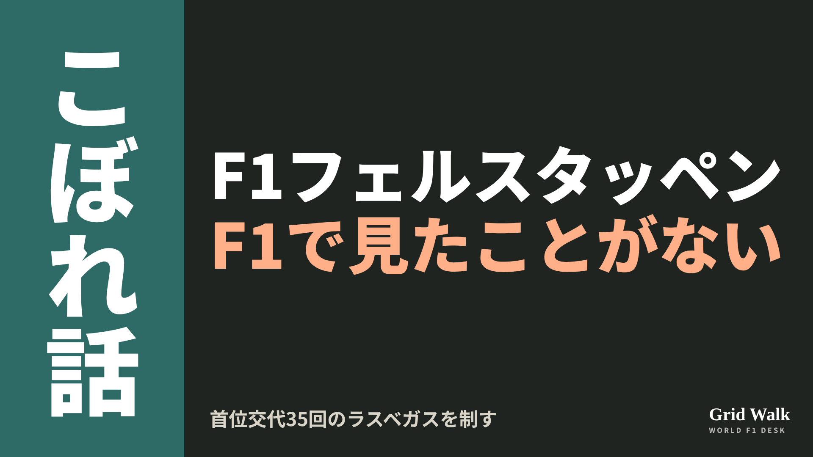<button class="cp dl" data-img="img/x_verstappen-wins-vegas-35-lead-changes-20261122.png" data-name="x_verstappen-wins-vegas-35-lead-changes-20261122.png">ダウンロード</button></li>
<li class="st"><div class="hd"><b>① noteをシェアするときの文</b></div><div class="bx" id="p1x0">ラスベガスGPは首位が35回入れ替わる決勝に。勝ったのはポールから出たフェルスタッペンで、ラスベガス3勝目です。本人は「F1で見たことがない」。noteにまとめました #F1jp #ラスベガスGP #フェルスタッペン</div><button class="cp" data-plain="p1x0">コピー</button></li>
<li class="st"><div class="hd"><b>② ①への返信</b></div><div class="bx" id="p1x1">ほかの海外記事も読みたい方は、F1 Grid Walkへ。
https://f1gridwalk.github.io/lens/verstappen-wins-vegas-35-lead-changes-20261122/?utm_source=x&amp;utm_campaign=verstappen-wins-vegas-35-lead-changes-20261122</div><button class="cp" data-plain="p1x1">コピー</button></li>
<li class="st"><div class="hd"><b>③ ②への返信</b></div><div class="bx" id="p1x2">毎日の海外F1ニュースは、日本語でこちらにまとめています。
https://f1gridwalk.github.io/</div><button class="cp" data-plain="p1x2">コピー</button></li>
</ol></section><section class="part" id="p2"><h2><span class="tag">OFF GRID</span>ラッセル「後悔はしていない」　48周目、チームメイトに挑みバリアへ</h2><p class="sub">サイトに公開：16:30</p><ol class="steps">
<li class="st im"><div class="hd"><span class="no">1</span><b>見出し画像</b><em>画像</em></div>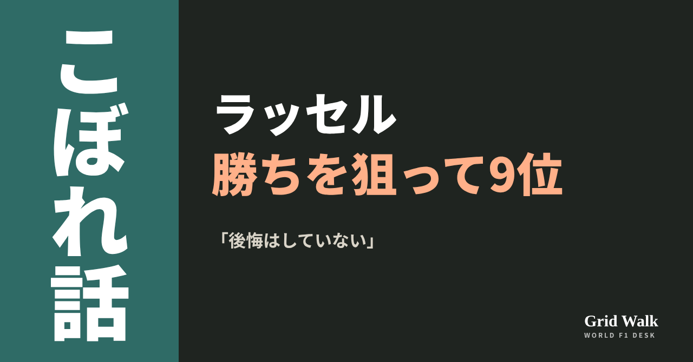<button class="cp dl" data-img="img/russell-crash-late-vegas-20261122.png" data-name="russell-crash-late-vegas-20261122_見出し画像.png">ダウンロード</button></li>
<li class="st"><div class="hd"><span class="no">2</span><b>タイトル</b></div><div class="bx" id="p2t">ラッセル「後悔はしていない」　48周目、チームメイトに挑みバリアへ</div><button class="cp" data-plain="p2t">タイトルをコピー</button></li>
<li class="st"><div class="hd"><span class="no">3</span><b>本文</b></div><div class="bx tall" id="p2r"><p>第21戦ラスベガスGPの決勝、全50周の48周目。メルセデスのジョージ・ラッセルは、チームメイトのアンドレア・キミ・アントネッリを抜こうとしてコントロールを失い、バリアにぶつかりました。ブラジルのGrande Prêmio（英語版）が11月22日に伝えています。フェルスタッペンと勝利を争っていたラッセルの結果は、9位、2点でした。</p><p>決勝前のコラムと、ラッセルの今季を追った読み解きへの案内はサイトで → <a href="https://f1gridwalk.github.io/lens/russell-crash-late-vegas-20261122/?utm_source=note&amp;utm_campaign=russell-crash-late-vegas-20261122">https://f1gridwalk.github.io/lens/russell-crash-late-vegas-20261122/?utm_source=note&amp;utm_campaign=russell-crash-late-vegas-20261122</a></p><blockquote><p>「うん、後悔はしていない。レースに勝ちたいなら、行くしかないと感じた」「こういうレースでは、ハイリスク・ハイリターンみたいなものだった」（ラッセル、Sky Sports F1。Grande Prêmio／ブラジル）</p></blockquote><h2>最前列から、抜きつ抜かれつ</h2><p>予選で最速だったアントネッリがパワーユニットに関する5グリッド降格を受け、ラッセルはマックス・フェルスタッペンと並んで最前列からスタートしました。序盤からフェルスタッペンに挑み、直線で前に出ても、すぐに抜き返される展開が続いたといいます（Grande Prêmio）。イギリスのRaceFansは、このレースを、ヨーヨーのような順位の入れ替わりが目立ったレースと書いています。</p><blockquote><p>「いや、誰も逃げられなかったと思う」「正直に言うと、ディプロイメントより、スリップストリームのほうが関係していたと思う」（ラッセル、Grande Prêmio／ブラジル）</p></blockquote><p>ディプロイメントは、バッテリーの電気をどこでどれだけ使うかの配分のことです。同じチームの2台でも、その考え方は分かれていたそうです。</p><blockquote><p>「でも、厳しかった。キミと僕でさえ、ディプロイメントの戦略が違っていたんだ」（ラッセル、Grande Prêmio／ブラジル）</p></blockquote><h2>5コーナーで、ほんの少し</h2><p>RaceFansによると、ラッセルはアントネッリから2位を取り戻そうとして、5コーナーで飛び出しました。破片を踏んだようにも見え、それは数周前に壊れたレッドブルのアイザック・ハジャーのフロントウイングのものだったかもしれない、と同紙は書いています。ラッセル本人は、自分のミスとして話しました。</p><blockquote><p>「ほんのわずかに間違えて、ロックアップしてしまい、避けられなかった」「もちろんがっかりしているし、少し悔しい。でも、後悔しているというわけではない」（ラッセル、Grande Prêmio／ブラジル）</p></blockquote><p>RaceFansは、フェルスタッペンが画面でラッセルのミスを見たとみられ、「お見事」と口にしたとも伝えています。決勝前の2人のやりとりは、11月22日のコラム https://f1gridwalk.github.io/lens/verstappen-russell-front-row-20261122/ で紹介しました。このあとアントネッリも急に速さを落とし、マクラーレンの2台が2位と3位に入っています（RaceFans）。</p><blockquote><p>「最後は、本当に望んだ結果じゃない」「勝ちを狙わずに、ここに3位や4位で立っていただけでも、がっかりしていたと思う」（ラッセル、Grande Prêmio／ブラジル）</p></blockquote><p>編集部としては、ラッセルの言葉で大事なのは、9位という数字より、表彰台を守っても満足できなかったと言い切った点だと見ています。勝てる位置から結果がこぼれる週末は、今季これが初めてではありません。今季のラッセルは、読み解き https://f1gridwalk.github.io/topics/russell-next-year-we-fight-again/ で。</p><p><strong>ゴールまであと少しのところで、チームメイトを抜きにいったラッセル。あなたなら、3位を守りますか。それとも勝ちを狙って行きますか？</strong></p><p>━━━━━━━━━━</p><p><strong>F1 Grid Walk では、世界のF1ニュースを毎日日本語でまとめています。</strong></p><p>海外の記事の要約を、毎日載せています。</p><p><a href="https://f1gridwalk.github.io/">https://f1gridwalk.github.io/</a></p><p>ほかの海外記事も読みたい方は、F1 Grid Walkへ。</p><p><a href="https://f1gridwalk.github.io/lens/russell-crash-late-vegas-20261122/">https://f1gridwalk.github.io/lens/russell-crash-late-vegas-20261122/</a></p><p>━━━━━━━━━━</p><p><a href="https://grandepremio.com/en/f1/russell-refuses-to-regret-las-vegas-crash-after-failed-antonelli-pass-i-had-to-go-for-it/">出典：Grande Prêmio（英語版）（ブラジル）</a></p><p><a href="https://grandepremio.com/en/f1/verstappen-wins-spectacular-las-vegas-f1-race-as-mclaren-takes-double-podium-and-russell-crashes/">出典：Grande Prêmio（英語版）（ブラジル）</a></p><p><a href="https://www.racefans.net/2026/11/22/verstappen-leads-parade-of-position-swapping-to-win-in-las-vegas/">出典：RaceFans（イギリス）</a></p><p><a href="https://www.the-race.com/formula-1/f1-2026-las-vegas-grand-prix-race-result/">出典：The Race（イギリス）</a></p><p><a href="https://www.formula1.com/en/racing/2026">出典：F1公式サイト（イギリス）</a></p></div><button class="cp" data-rich="p2r">本文をコピー</button></li>
<li class="st"><div class="hd"><span class="no">4</span><b>ハッシュタグ</b></div><div class="bx" id="p2h">#F1 #F1jp #ラッセル #メルセデス #アントネッリ #フェルスタッペン #ラスベガスGP #F1こぼれ話 #OFFGRID</div><button class="cp" data-plain="p2h">タグをコピー</button></li>
</ol><h3 class="xh">X</h3><ol class="steps">
<li class="st im"><div class="hd"><b>X用の画像</b><em>画像</em></div>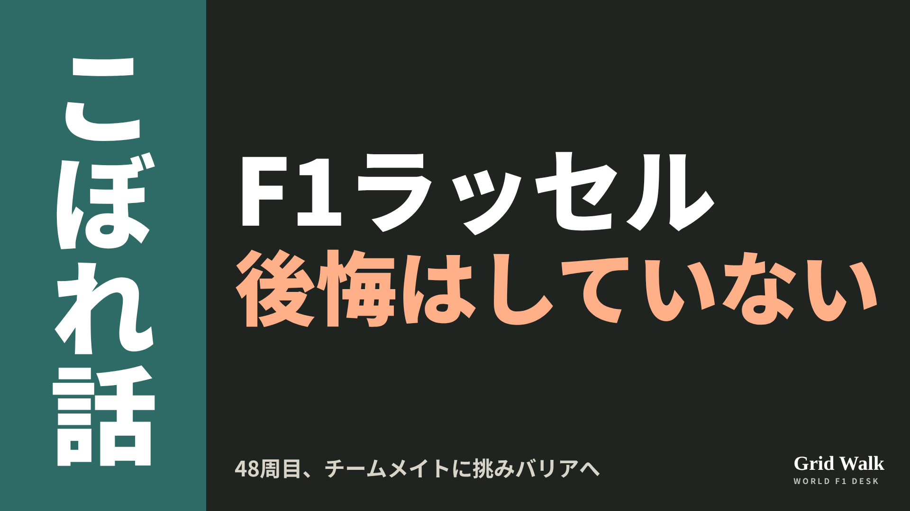<button class="cp dl" data-img="img/x_russell-crash-late-vegas-20261122.png" data-name="x_russell-crash-late-vegas-20261122.png">ダウンロード</button></li>
<li class="st"><div class="hd"><b>① noteをシェアするときの文</b></div><div class="bx" id="p2x0">ラスベガスGPの48周目、ラッセルはチームメイトのアントネッリを抜きにいき、バリアにぶつかって9位に。それでも「後悔はしていない」。noteにまとめました #F1jp #ラッセル #メルセデス</div><button class="cp" data-plain="p2x0">コピー</button></li>
<li class="st"><div class="hd"><b>② ①への返信</b></div><div class="bx" id="p2x1">ほかの海外記事も読みたい方は、F1 Grid Walkへ。
https://f1gridwalk.github.io/lens/russell-crash-late-vegas-20261122/?utm_source=x&amp;utm_campaign=russell-crash-late-vegas-20261122</div><button class="cp" data-plain="p2x1">コピー</button></li>
<li class="st"><div class="hd"><b>③ ②への返信</b></div><div class="bx" id="p2x2">毎日の海外F1ニュースは、日本語でこちらにまとめています。
https://f1gridwalk.github.io/</div><button class="cp" data-plain="p2x2">コピー</button></li>
</ol></section><section class="part" id="p3"><h2><span class="tag">OFF GRID</span>アントネッリ「たぶん僕のミスだった」　最後の1周で表彰台を逃す</h2><p class="sub">サイトに公開：16:31</p><ol class="steps">
<li class="st im"><div class="hd"><span class="no">1</span><b>見出し画像</b><em>画像</em></div>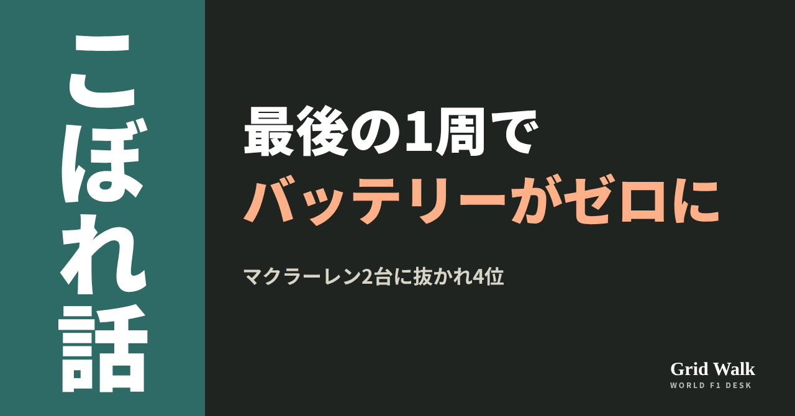<button class="cp dl" data-img="img/antonelli-last-lap-fourth-20261122.png" data-name="antonelli-last-lap-fourth-20261122_見出し画像.png">ダウンロード</button></li>
<li class="st"><div class="hd"><span class="no">2</span><b>タイトル</b></div><div class="bx" id="p3t">アントネッリ「たぶん僕のミスだった」　最後の1周で表彰台を逃す</div><button class="cp" data-plain="p3t">タイトルをコピー</button></li>
<li class="st"><div class="hd"><span class="no">3</span><b>本文</b></div><div class="bx tall" id="p3r"><p>第21戦ラスベガスGPの決勝で、首位のマックス・フェルスタッペン（レッドブル）を最後の1周で抜くつもりだったアンドレア・キミ・アントネッリ（メルセデス）が、その1周でマクラーレンの2台に抜かれ、4位でゴールしました。</p><p>元の記事へのリンクと、オーバーテイクモードとエネルギー回生の解説はサイトで → <a href="https://f1gridwalk.github.io/lens/antonelli-last-lap-fourth-20261122/?utm_source=note&amp;utm_campaign=antonelli-last-lap-fourth-20261122">https://f1gridwalk.github.io/lens/antonelli-last-lap-fourth-20261122/?utm_source=note&amp;utm_campaign=antonelli-last-lap-fourth-20261122</a></p><blockquote><p>「たぶん僕のミスだった。でも、その場ではとても難しくもあるんだ。後ろにとどまってオーバーテイクを残すために、正しいことをしていると思っていた。でも結果的に、それでレースを損なってしまった」（アントネッリ、Grande Prêmio／ブラジル）</p></blockquote><p>アントネッリは11月1日のメキシコシティGPで、すでに今季のチャンピオンを決めています（コラム https://f1gridwalk.github.io/lens/antonelli-title-world-20261102/ ）。ラスベガスでは予選最速のタイムを出しましたが、追加のパワーユニット部品を使ったため5グリッド降格となり、6番手からのスタートでした。</p><h2>ミディアムで出て、ソフトで追い上げた</h2><p>Motorsport.com（英語版）のレースレポートによると、上位10台のうちミディアムタイヤでスタートしたのはアントネッリだけで、スタートでアルピーヌの2台に抜かれました。1周目の8番手から、17周目には4番手まで戻っています。</p><p>終盤のアントネッリは、上位10台でただ1人ソフトタイヤでした。38周目にはチームメイトのジョージ・ラッセルから2番手を奪い、その後はフェルスタッペンと何度も首位を入れ替えます。43周目には、コントロールラインをフェルスタッペンより0.001秒先に通過しました（Motorsport.com）。PlanetF1によると、前に出ても、そのたびにすぐ取り返されました。</p><p>フェルスタッペンは無線で、チームにこう伝えていました。</p><blockquote><p>「最終ラップのデプロイメントを考えないといけない。向こうはやり方をつかんだから」（フェルスタッペン、チーム無線。Motorsport.com英語版）</p></blockquote><p>デプロイメントは、ためた電気をどこで使うかの配分です。チームは、最終ラップにこれ以上いい配分はないと答えたといいます。</p><h2>最後のシケインで、バッテリーがゼロに</h2><p>ところが49周目の終わりに、アントネッリは遅れてマクラーレンの2台の後ろに下がりました（Motorsport.com）。PlanetF1は、急に力を失ったように見えたと書いています。さらにピエール・ガスリー（アルピーヌ）にも抜かれましたが、すぐに抜き返して4位を守りました。</p><p>ブラジルのGrande Prêmio（英語版）によると、アントネッリはレースのあとイギリスのSky Sports F1に、配分の作戦そのものではなく、自分のアクセル操作に原因があったと話しました。本人は、最後まで後ろにとどまり、最後の2本の直線で勝負するつもりでした。</p><blockquote><p>「オーバーテイクモードを残したかったから、アクセルを戻して、少しスピードを保つためにまた踏んだ。それでバッテリーの回生が全部狂って、シケインではゼロだった」「1コーナーに向かうところで1秒以上失った。マックスについていって勝つチャンスを作れなかっただけじゃなく、2台のマクラーレンにも置き去りにされて、表彰台も失った」（アントネッリ、Grande Prêmio／ブラジル）</p></blockquote><p>編集部としては、王座を決めたあとのレースでも、最後の1周の電気のやりくりひとつで2位から4位まで落ちうるところに、2026年のクルマの難しさが出たと見ています。オーバーテイクモードの仕組みは https://f1gridwalk.github.io/deep/rules/overtake-mode/ 、エネルギー回生は https://f1gridwalk.github.io/deep/rules/harvesting/ にあります。次の第22戦カタールGPは、11月27〜29日です。</p><p><strong>最後の1周の電気のやりくりまで、ドライバーが自分で背負う2026年のF1。この駆け引きを、あなたは面白いと見ますか？</strong></p><p>━━━━━━━━━━</p><p><strong>F1 Grid Walk では、世界のF1ニュースを毎日日本語でまとめています。</strong></p><p>海外の記事の要約を、毎日載せています。</p><p><a href="https://f1gridwalk.github.io/">https://f1gridwalk.github.io/</a></p><p>ほかの海外記事も読みたい方は、F1 Grid Walkへ。</p><p><a href="https://f1gridwalk.github.io/lens/antonelli-last-lap-fourth-20261122/">https://f1gridwalk.github.io/lens/antonelli-last-lap-fourth-20261122/</a></p><p>━━━━━━━━━━</p><p><a href="https://grandepremio.com/en/f1/antonelli-reveals-battery-mistake-that-cost-las-vegas-f1-win-and-podium-i-got-smoked/">出典：Grande Prêmio（英語版）（ブラジル）</a></p><p><a href="https://sports.yahoo.com/articles/f1-las-vegas-gp-max-054411798.html">出典：Motorsport.com英語版（Yahoo Sportsに転載）（国際）</a></p><p><a href="https://www.planetf1.com/news/2026-las-vegas-grand-prix-race-report">出典：PlanetF1（イギリス）</a></p><p><a href="https://www.formula1.com/en/results/2026/races/1300/las-vegas/starting-grid">出典：F1公式サイト（イギリス）</a></p><p><a href="https://www.formula1.com/en/racing/2026">出典：F1公式サイト（イギリス）</a></p></div><button class="cp" data-rich="p3r">本文をコピー</button></li>
<li class="st"><div class="hd"><span class="no">4</span><b>ハッシュタグ</b></div><div class="bx" id="p3h">#F1 #F1jp #メルセデス #アントネッリ #フェルスタッペン #マクラーレン #ラスベガスGP #オーバーテイクモード #F1こぼれ話 #OFFGRID</div><button class="cp" data-plain="p3h">タグをコピー</button></li>
</ol><h3 class="xh">X</h3><ol class="steps">
<li class="st im"><div class="hd"><b>X用の画像</b><em>画像</em></div>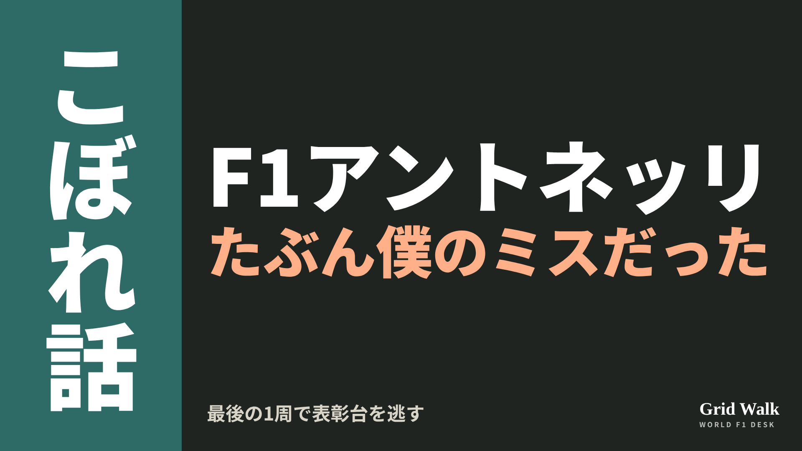<button class="cp dl" data-img="img/x_antonelli-last-lap-fourth-20261122.png" data-name="x_antonelli-last-lap-fourth-20261122.png">ダウンロード</button></li>
<li class="st"><div class="hd"><b>① noteをシェアするときの文</b></div><div class="bx" id="p3x0">最後の1周でフェルスタッペンを狙っていたアントネッリが、マクラーレンの2台に抜かれて4位に。本人は「たぶん僕のミスだった」と、バッテリーの回生が狂った理由を説明しました。noteにまとめました #F1jp #アントネッリ</div><button class="cp" data-plain="p3x0">コピー</button></li>
<li class="st"><div class="hd"><b>② ①への返信</b></div><div class="bx" id="p3x1">ほかの海外記事も読みたい方は、F1 Grid Walkへ。
https://f1gridwalk.github.io/lens/antonelli-last-lap-fourth-20261122/?utm_source=x&amp;utm_campaign=antonelli-last-lap-fourth-20261122</div><button class="cp" data-plain="p3x1">コピー</button></li>
<li class="st"><div class="hd"><b>③ ②への返信</b></div><div class="bx" id="p3x2">毎日の海外F1ニュースは、日本語でこちらにまとめています。
https://f1gridwalk.github.io/</div><button class="cp" data-plain="p3x2">コピー</button></li>
</ol></section><section class="part" id="p4"><h2><span class="tag">OFF GRID</span>バスール「まったく受け入れられない」　ルクレールがハミルトンに接触</h2><p class="sub">サイトに公開：16:32</p><ol class="steps">
<li class="st im"><div class="hd"><span class="no">1</span><b>見出し画像</b><em>画像</em></div>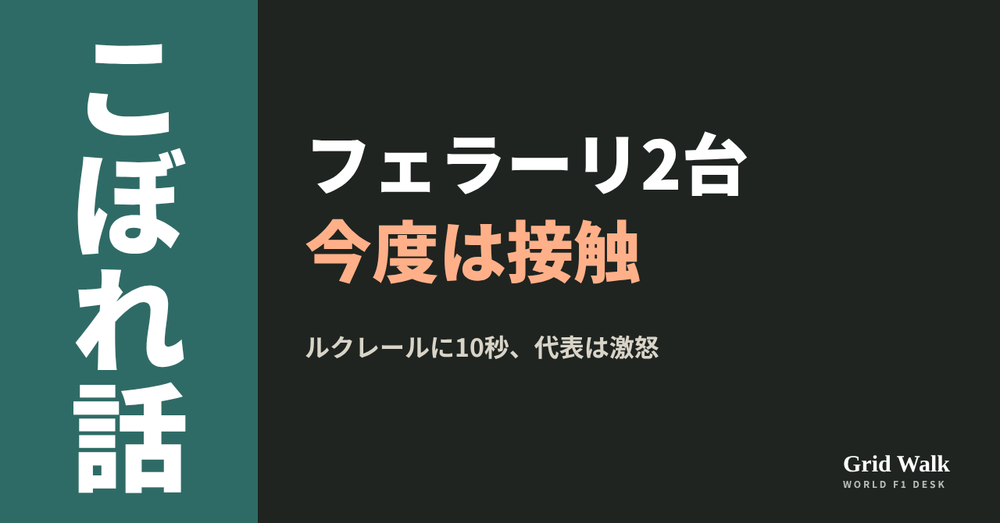<button class="cp dl" data-img="img/ferrari-leclerc-hamilton-contact-20261122.png" data-name="ferrari-leclerc-hamilton-contact-20261122_見出し画像.png">ダウンロード</button></li>
<li class="st"><div class="hd"><span class="no">2</span><b>タイトル</b></div><div class="bx" id="p4t">バスール「まったく受け入れられない」　ルクレールがハミルトンに接触</div><button class="cp" data-plain="p4t">タイトルをコピー</button></li>
<li class="st"><div class="hd"><span class="no">3</span><b>本文</b></div><div class="bx tall" id="p4r"><p>ラスベガスGPの決勝の終盤、フェラーリのシャルル・ルクレールが、チームメイトのルイス・ハミルトンに接触し、ハミルトンはスピンしました。ルクレールには10秒加算。フレデリック・バスール代表はレース後、イタリアのSkyの取材に怒りをあらわにしました（イタリアのMotorionline、11月22日）。</p><p>元の記事へのリンクと、メキシコのあとの3人の話し合いを伝えたコラムはサイトで → <a href="https://f1gridwalk.github.io/lens/ferrari-leclerc-hamilton-contact-20261122/?utm_source=note&amp;utm_campaign=ferrari-leclerc-hamilton-contact-20261122">https://f1gridwalk.github.io/lens/ferrari-leclerc-hamilton-contact-20261122/?utm_source=note&amp;utm_campaign=ferrari-leclerc-hamilton-contact-20261122</a></p><blockquote><p>「まず、受け入れられない。メキシコのあとに伝えたのと同じメッセージだ」「シャルルはチームに大きな損をさせるミスをした。まったく受け入れられないふるまいだ」（バスール、Motorionline／イタリア）</p></blockquote><p>イタリアのANSA通信によると、ハミルトンは7位、ルクレールは10秒を足されて10位でした。優勝はマックス・フェルスタッペン（レッドブル）です。</p><h2>抜くなという指示は出ていた</h2><p>バスールによると、チームはルクレールに、ハミルトンを攻めないよう伝えていました。</p><blockquote><p>「シャルルには、攻めるなという指示を伝えていた。あの段階では、前の車を抜いても、ほかの車に抜かれるからだ。自分のレースをしろ、と」（バスール、Motorionline／イタリア）</p></blockquote><blockquote><p>「怒っているどころではない。メキシコのあと、メッセージははっきりしていたし、ブラジルでみんなで話し合っていた」「コミュニケーションの問題ではない」（同）</p></blockquote><blockquote><p>「今日起きたことの結果については、明日話し合う。ただ、手は打たなければならない」「今夜何かをするわけではない。冷静になってから決める」「たぶん、来シーズンについて考えを固める時でもある」（同）</p></blockquote><p>Motorionlineは、2027年の顔ぶれやチーム内の決まりの見直しにつながりうる言葉だと書きました。ハミルトンはこれより前に、2人の間の争い方を書いた決まりを求めていたともいいます。</p><h2>メキシコでは、ぶつかっていない</h2><p>2人の争いが前に問題になったのは、11月1日のメキシコシティGPの1周目です。首位を争う2台は4コーナーでともにコースを外れ、ルクレールに5秒加算。このとき2台は接触していません（読み解き https://f1gridwalk.github.io/topics/vasseur-from-the-first-straight-line/ ）。その後の3人の話し合いは、コラム https://f1gridwalk.github.io/lens/leclerc-hamilton-talk-20261120/ で。</p><p>ルクレールはレース後、罰を受け入れると話しました（イタリアのCorriere dello Sport）。</p><blockquote><p>「10秒を科されたのなら、それに値したということだし、何か間違ったことをしたということだ。それだけだ」「これまでの争いとは、まったく違ったと思う。あのときの争いには、限界を少し越えすぎたものもあった。今回は、何もおかしなことはなかったと思う」（ルクレール、Corriere dello Sport／イタリア）</p></blockquote><blockquote><p>「ハミルトンと話す。自分の見方を説明したいだけだ」（同）</p></blockquote><p>ハミルトン自身も、レースの前半にランド・ノリス（マクラーレン）との争いでコースの外を走り、有利になったとして10秒加算を受け、セーフティカーの間のピットストップで消化していました（Corriere dello Sport、Automoto.it）。</p><blockquote><p>「僕たちの間に決まりを課すか？　それはバスールが決めること。僕は言えることは全部言った」「ルクレールとの間で何が起きているのか、正確にはわからない。全部片づいたと思っていた。僕は彼とは何の問題もない」「これは僕たちの間の争いではなく、マクラーレンとの争いだ」（ハミルトン、Corriere dello Sport／イタリア）</p></blockquote><p>編集部としては、バスールが伝え方の問題ではないと言い切ったことで、残るカタールとアブダビの2戦は、2人が指示を守れるかを見る場になったと見ています。</p><p><strong>チームの中の争い方を、フェラーリは書いた決まりにするべきだと思いますか？</strong></p><p>━━━━━━━━━━</p><p><strong>F1 Grid Walk では、世界のF1ニュースを毎日日本語でまとめています。</strong></p><p>海外の記事の要約を、毎日載せています。</p><p><a href="https://f1gridwalk.github.io/">https://f1gridwalk.github.io/</a></p><p>ほかの海外記事も読みたい方は、F1 Grid Walkへ。</p><p><a href="https://f1gridwalk.github.io/lens/ferrari-leclerc-hamilton-contact-20261122/">https://f1gridwalk.github.io/lens/ferrari-leclerc-hamilton-contact-20261122/</a></p><p>━━━━━━━━━━</p><p><a href="https://f1grandprix.motorionline.com/ferrari-las-vegas-contatto-leclerc-hamilton-testacoda-vasseur/">出典：Motorionline（F1GrandPrix）（イタリア）</a></p><p><a href="https://www.corrieredellosport.it/news/formula-1/ferrari/2026/11/22-152749168/leclerc_sconsolato_parler_con_hamilton_penalit_se_me_l_hanno_data_avr_fatto_qualcosa_di_sbagliato">出典：Corriere dello Sport（イタリア）</a></p><p><a href="https://www.corrieredellosport.it/news/formula-1/2026/11/22-152726450/gp_las_vegas_diretta_f1_segui_la_gara_di_antonelli_hamilton_e_leclerc_live">出典：Corriere dello Sport（イタリア）</a></p><p><a href="https://automoto.it/formula1/f1-ferrari-rottura-leclerc-hamilton-vasseur-provvedimenti-las-vegas.html">出典：Automoto.it（イタリア）</a></p><p><a href="https://www.ansa.it/sito/notizie/sport/f1/2026/11/22/f1-a-las-vegas.-vince-verstappen-quarto-antonelli-settima-la-ferrari-di-hamilton_afe6c741-dae2-445a-a200-bdecf6b8a593.html">出典：ANSA通信（イタリア）</a></p><p><a href="https://www.formula1.com/en/racing/2026">出典：F1公式サイト（イギリス）</a></p></div><button class="cp" data-rich="p4r">本文をコピー</button></li>
<li class="st"><div class="hd"><span class="no">4</span><b>ハッシュタグ</b></div><div class="bx" id="p4h">#F1 #F1jp #フェラーリ #ルクレール #ハミルトン #バスール #ラスベガスGP #F1こぼれ話 #OFFGRID</div><button class="cp" data-plain="p4h">タグをコピー</button></li>
</ol><h3 class="xh">X</h3><ol class="steps">
<li class="st im"><div class="hd"><b>X用の画像</b><em>画像</em></div>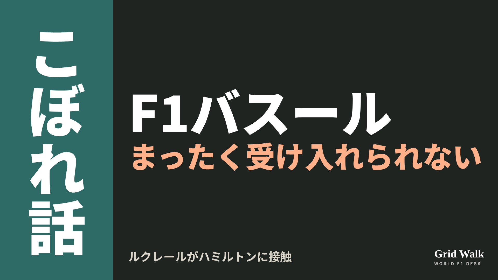<button class="cp dl" data-img="img/x_ferrari-leclerc-hamilton-contact-20261122.png" data-name="x_ferrari-leclerc-hamilton-contact-20261122.png">ダウンロード</button></li>
<li class="st"><div class="hd"><b>① noteをシェアするときの文</b></div><div class="bx" id="p4x0">ラスベガスGPの終盤、ルクレールがハミルトンに接触し10秒加算。抜くなと伝えていたバスール代表は「まったく受け入れられない」。noteにまとめました #F1jp #フェラーリ #ルクレール #ハミルトン</div><button class="cp" data-plain="p4x0">コピー</button></li>
<li class="st"><div class="hd"><b>② ①への返信</b></div><div class="bx" id="p4x1">ほかの海外記事も読みたい方は、F1 Grid Walkへ。
https://f1gridwalk.github.io/lens/ferrari-leclerc-hamilton-contact-20261122/?utm_source=x&amp;utm_campaign=ferrari-leclerc-hamilton-contact-20261122</div><button class="cp" data-plain="p4x1">コピー</button></li>
<li class="st"><div class="hd"><b>③ ②への返信</b></div><div class="bx" id="p4x2">毎日の海外F1ニュースは、日本語でこちらにまとめています。
https://f1gridwalk.github.io/</div><button class="cp" data-plain="p4x2">コピー</button></li>
</ol></section><section class="part" id="p5"><h2><span class="tag">OFF GRID</span>ノリス「いちばん混沌としたF1のレース」　マクラーレン2・3位</h2><p class="sub">サイトに公開：16:33</p><ol class="steps">
<li class="st im"><div class="hd"><span class="no">1</span><b>見出し画像</b><em>画像</em></div>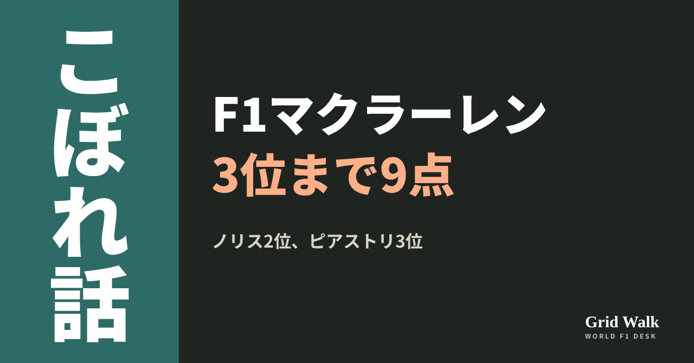<button class="cp dl" data-img="img/mclaren-double-podium-third-fight-20261122.png" data-name="mclaren-double-podium-third-fight-20261122_見出し画像.png">ダウンロード</button></li>
<li class="st"><div class="hd"><span class="no">2</span><b>タイトル</b></div><div class="bx" id="p5t">ノリス「いちばん混沌としたF1のレース」　マクラーレン2・3位</div><button class="cp" data-plain="p5t">タイトルをコピー</button></li>
<li class="st"><div class="hd"><span class="no">3</span><b>本文</b></div><div class="bx tall" id="p5r"><p>2台そろって表彰台に上がったラスベガスGPの決勝を、マクラーレンのランド・ノリスは笑いながらこう振り返りました。オランダのRacingNews365が11月22日に伝えています。</p><p>決勝前のノリスの予想と、3位争いの点の動きはサイトで → <a href="https://f1gridwalk.github.io/lens/mclaren-double-podium-third-fight-20261122/?utm_source=note&amp;utm_campaign=mclaren-double-podium-third-fight-20261122">https://f1gridwalk.github.io/lens/mclaren-double-podium-third-fight-20261122/?utm_source=note&amp;utm_campaign=mclaren-double-podium-third-fight-20261122</a></p><blockquote><p>「これまででいちばん混沌としたF1のレースだったに違いない！」「半分の時間は、何が起きているのかさえわからなかった」（ノリス、RacingNews365／オランダ）</p></blockquote><p>優勝はレッドブルのマックス・フェルスタッペン。ノリスが2位、チームメイトのオスカー・ピアストリが3位でした。RacingNews365の英語版によると、50周のレースで先頭は35回入れ替わりました。F1公式の順位では、コンストラクターズ3位のレッドブルは440点、4位のマクラーレンは431点で、差は9点です。3位争いと賞金の話は、サイトの要約 https://f1gridwalk.github.io/news/nl-racingnews365-redbull-mclaren-p3/ で。</p><h2>3番手から、一度は10位の外へ</h2><p>F1公式のスタート順で、ノリスは3番手でした。RacingNews365によると、いったんは10位のすぐ外まで下がっています。英語版は、マクラーレンの直線の遅さがはっきり不利だったと書いています。それでもセーフティカーのあと、2台はペースをつかんで前に戻りました。英語版によると、終盤にはメルセデスの2台が崩れています。</p><blockquote><p>「つらかった。前に戻るタイミングはうまく合わせられた」「多くの人がミスをしたけど、ミスをしないことが大事なレースでもあった」（ノリス、RacingNews365／イギリス）</p></blockquote><p>ノリスは、ほんの少しだけ先頭も走りました。</p><blockquote><p>「たぶん15秒くらい先頭を走った。だから、すごく誇らしい」「先頭を走ったんだ！」（ノリス、RacingNews365／オランダ）</p></blockquote><p>ピアストリは予選7番手でしたが、エンジン関係の罰で17番手から出ています（RacingNews365、F1公式のスタート順）。そこからの3位です。去年の失格からの巻き返しは、コラム https://f1gridwalk.github.io/lens/mclaren-vegas-redemption-20261121/ で。</p><h2>予想はトップ5だった</h2><p>決勝の前、RacingNews365が11月19日に伝えた取材で、ノリスはこう話していました。</p><blockquote><p>「トップ5に入ると予想している」（ノリス、RacingNews365／オランダ）</p></blockquote><p>3位争いについては、お金の話もしています。</p><blockquote><p>「チーム全体にとって、チームの一人ひとりにとって、大きなお金なんだ」「4位と3位では、とんでもない額のお金が違ってくる」（ノリス、RacingNews365／イギリス）</p></blockquote><p>そしてレースのあとです。</p><blockquote><p>「2位か3位が取れるとは思っていなかった。だから、すごく前向きだ」（ノリス、RacingNews365／オランダ）</p></blockquote><blockquote><p>「楽しい一日だった。混沌としていたけど楽しかった。チームとしていい結果だ」（ノリス、RacingNews365／イギリス）</p></blockquote><p>F1公式の順位では、決勝の前はレッドブル415点、マクラーレン398点で、差は17点でした。今回、レッドブルは25点、マクラーレンは33点を加え、差は8点縮まりました。残りはカタールとアブダビの2戦です。</p><p>編集部としては、この9点は、マクラーレンが追う立場のまま最後の2戦に入ることを示していると見ています。週の初めにノリス自身が予想したトップ5を上回り、2台そろって表彰台に上がっても、まだ届かない差だからです。</p><p><strong>残り2戦で、マクラーレンはレッドブルとの9点差をひっくり返せると思いますか？</strong></p><p>━━━━━━━━━━</p><p><strong>F1 Grid Walk では、世界のF1ニュースを毎日日本語でまとめています。</strong></p><p>海外の記事の要約を、毎日載せています。</p><p><a href="https://f1gridwalk.github.io/">https://f1gridwalk.github.io/</a></p><p>ほかの海外記事も読みたい方は、F1 Grid Walkへ。</p><p><a href="https://f1gridwalk.github.io/lens/mclaren-double-podium-third-fight-20261122/">https://f1gridwalk.github.io/lens/mclaren-double-podium-third-fight-20261122/</a></p><p>━━━━━━━━━━</p><p><a href="https://racingnews365.nl/norris-grapt-na-chaotische-race-over-verstappen-ik-heb-aan-de-leiding-gereden">出典：RacingNews365（オランダ）</a></p><p><a href="https://racingnews365.com/lando-norris-makes-bold-claim-after-chaotic-mclaren-double-podium">出典：RacingNews365（イギリス）</a></p><p><a href="https://racingnews365.nl/norris-maakt-zich-op-voor-zware-strijd-met-red-bull">出典：RacingNews365（オランダ）</a></p><p><a href="https://racingnews365.com/lando-norris-relishing-huge-red-bull-f1-fight-worth-millions-to-mclaren">出典：RacingNews365（イギリス）</a></p><p><a href="https://racingnews365.com/las-vegas-starting-grid-heavily-adjusted-after-five-driver-penalties">出典：RacingNews365（イギリス）</a></p><p><a href="https://www.formula1.com/en/results/2026/races/1300/las-vegas/starting-grid">出典：F1公式サイト（イギリス）</a></p><p><a href="https://www.formula1.com/en/results/2026/team">出典：F1公式サイト（イギリス）</a></p><p><a href="https://www.formula1.com/en/racing/2026">出典：F1公式サイト（イギリス）</a></p></div><button class="cp" data-rich="p5r">本文をコピー</button></li>
<li class="st"><div class="hd"><span class="no">4</span><b>ハッシュタグ</b></div><div class="bx" id="p5h">#F1 #F1jp #マクラーレン #ノリス #ピアストリ #レッドブル #ラスベガスGP #コンストラクターズ #F1こぼれ話 #OFFGRID</div><button class="cp" data-plain="p5h">タグをコピー</button></li>
</ol><h3 class="xh">X</h3><ol class="steps">
<li class="st im"><div class="hd"><b>X用の画像</b><em>画像</em></div>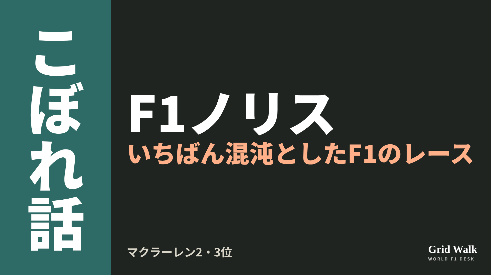<button class="cp dl" data-img="img/x_mclaren-double-podium-third-fight-20261122.png" data-name="x_mclaren-double-podium-third-fight-20261122.png">ダウンロード</button></li>
<li class="st"><div class="hd"><b>① noteをシェアするときの文</b></div><div class="bx" id="p5x0">ラスベガスGPでマクラーレンはノリス2位、ピアストリ3位。ノリスは「いちばん混沌としたF1のレース」。レッドブルとの3位争いは17点差から9点差に。noteにまとめました #F1jp #マクラーレン #ノリス</div><button class="cp" data-plain="p5x0">コピー</button></li>
<li class="st"><div class="hd"><b>② ①への返信</b></div><div class="bx" id="p5x1">ほかの海外記事も読みたい方は、F1 Grid Walkへ。
https://f1gridwalk.github.io/lens/mclaren-double-podium-third-fight-20261122/?utm_source=x&amp;utm_campaign=mclaren-double-podium-third-fight-20261122</div><button class="cp" data-plain="p5x1">コピー</button></li>
<li class="st"><div class="hd"><b>③ ②への返信</b></div><div class="bx" id="p5x2">毎日の海外F1ニュースは、日本語でこちらにまとめています。
https://f1gridwalk.github.io/</div><button class="cp" data-plain="p5x2">コピー</button></li>
</ol></section><section class="part" id="p6"><h2><span class="tag">OFF GRID</span>ハジャー予選後に「表彰台を狙えるいい位置」　決勝はウイングが壊れ14位</h2><p class="sub">サイトに公開：16:34</p><ol class="steps">
<li class="st im"><div class="hd"><span class="no">1</span><b>見出し画像</b><em>画像</em></div>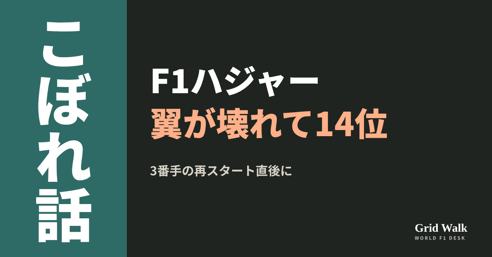<button class="cp dl" data-img="img/hadjar-front-wing-vegas-20261122.png" data-name="hadjar-front-wing-vegas-20261122_見出し画像.png">ダウンロード</button></li>
<li class="st"><div class="hd"><span class="no">2</span><b>タイトル</b></div><div class="bx" id="p6t">ハジャー予選後に「表彰台を狙えるいい位置」　決勝はウイングが壊れ14位</div><button class="cp" data-plain="p6t">タイトルをコピー</button></li>
<li class="st"><div class="hd"><span class="no">3</span><b>本文</b></div><div class="bx tall" id="p6r"><p>ラスベガスGPの決勝で、レッドブルのアイザック・ハジャーは前のほうを走り、優勝争いの中にいました。ところがセーフティカーが戻った直後、直線でフロントウイングの片側が突然壊れます。オランダのGPblogは26周目のことで、ほかの車と接触した様子はなかったと伝えています。ハジャーはピットでウイングを替えなければならず、順位を大きく落としました。GPblogの結果表では14位です。</p><p>元の記事へのリンクと、ハジャーが初優勝を狙うと話したコラムへの案内はサイトで → <a href="https://f1gridwalk.github.io/lens/hadjar-front-wing-vegas-20261122/?utm_source=note&amp;utm_campaign=hadjar-front-wing-vegas-20261122">https://f1gridwalk.github.io/lens/hadjar-front-wing-vegas-20261122/?utm_source=note&amp;utm_campaign=hadjar-front-wing-vegas-20261122</a></p><h2>決勝の前の日は「表彰台を狙えるいい位置」</h2><p>決勝の前の日、予選のあとに、ハジャーはGPblogなどのメディアに、最後のアタックで前の車のスリップストリームを使えなかったと話していました。</p><blockquote><p>「最後のアタックでは、僕たちは少し間抜けに見えた。でも、ほかのチームはとても賢くやった」「どのみち、ああいう駆け引きはあまり好きじゃない。クルマを速く走らせるのが好きなんだ」（ハジャー、GPblog／オランダ）</p></blockquote><p>最速のアンドレア・キミ・アントネッリ（メルセデス）がグリッド降格を受け、ハジャーは4番グリッドからのスタートになりました（F1公式）。</p><blockquote><p>「結局、明日は4番手からスタートするから、表彰台を狙えるいい位置にいる」「今の規則なら、長い直線があって簡単に抜けるコースだと思う」（ハジャー、GPblog／オランダ）</p></blockquote><h2>2番手争いから、最後尾へ</h2><p>GPblogのオランダ語版によると、ハジャーは1周目のうちにランド・ノリス（マクラーレン）から3番手を奪い、そのあとはジョージ・ラッセル（メルセデス）と2番手を争いました。オランダのF1Maximaalは、ハジャーがチームに、前のマックス・フェルスタッペンが守るのをやめられないかと聞き、守りをやめたチームメイトを抜いていった、と書いています。</p><p>セルジオ・ペレス（キャデラック）とラファエル・カマラ（ハース）の接触でセーフティカーが出ると、各車がピットに入りました（F1Maximaal）。GPblogのオランダ語版によると、レッドブルはフェルスタッペンに続けてハジャーを入れるダブルピットストップを選び、ハジャーはここでラッセルに順位を明け渡しました。セーフティカーの後ろの順番は、フェルスタッペン、ラッセル、ハジャーでした（F1Maximaal）。</p><p>そしてセーフティカーが明けた再スタートです。GPblogの英語版は、ウイングが壊れたのは、直線用のストレートモードが終わって前のウイングのフラップ2枚が閉じた、ちょうどその瞬間だったと書いています。可動式の空力の仕組みが関わったのかという疑問が出る、としつつ、原因だとは書いていません。ピットに入ったハジャーは最後尾まで下がりました（F1Maximaal）。レースはフェルスタッペンが勝っています（GPblog）。</p><h2>残るは2戦</h2><p>ハジャーは、残り3戦で初優勝を狙うと話していました（ドイツのMotorsport-Totalが11月19日に伝えた言葉）。コラム https://f1gridwalk.github.io/lens/hadjar-first-win-chance-20261121/ で紹介しています。そのうちの1戦は、こうして終わりました。2026年は全23戦で、残るのは第22戦カタールGPと第23戦アブダビGPです（F1公式）。</p><p>編集部としては、1周目で3番手を奪い、2番手を争った前半の走りは、長い直線で抜けるという本人の読みどおりだったと見ています。それだけに、優勝争いの中で迎えた再スタートでのウイングの破損は、ハジャーにとって痛いものになりました。</p><p><strong>ウイングが壊れなければ、ハジャーは表彰台、あるいは初優勝に届いたと思いますか？</strong></p><p>━━━━━━━━━━</p><p><strong>F1 Grid Walk では、世界のF1ニュースを毎日日本語でまとめています。</strong></p><p>海外の記事の要約を、毎日載せています。</p><p><a href="https://f1gridwalk.github.io/">https://f1gridwalk.github.io/</a></p><p>ほかの海外記事も読みたい方は、F1 Grid Walkへ。</p><p><a href="https://f1gridwalk.github.io/lens/hadjar-front-wing-vegas-20261122/">https://f1gridwalk.github.io/lens/hadjar-front-wing-vegas-20261122/</a></p><p>━━━━━━━━━━</p><p><a href="https://www.gpblog.com/en/breaking-news/bizarre-scenes-in-las-vegas-as-hadjars-front-wing-suddenly-collapses">出典：GPblog（英語版）（オランダ）</a></p><p><a href="https://www.gpblog.com/en/news/hadjar-admits-red-bull-looked-a-bit-stupid-in-las-vegas-qualifying">出典：GPblog（英語版）（オランダ）</a></p><p><a href="https://www.gpblog.com/nl/nieuws/masterclass-van-verstappen-tijdens-spektakelstuk-in-las-vegas">出典：GPblog（オランダ語版）（オランダ）</a></p><p><a href="https://www.gpblog.com/en/news/f1-full-results-verstappen-fends-off-the-competition-to-win-the-las-vegas-gp">出典：GPblog（英語版）（オランダ）</a></p><p><a href="https://www.f1maximaal.nl/formule-1/verstappen-wint-bizarre-race-in-las-vegas-concurrenten-vallen-een-voor-een-af">出典：F1Maximaal（オランダ）</a></p><p><a href="https://www.formula1.com/en/results/2026/races/1300/las-vegas/starting-grid">出典：F1公式サイト（イギリス）</a></p><p><a href="https://www.formula1.com/en/results/2026/races">出典：F1公式サイト（イギリス）</a></p></div><button class="cp" data-rich="p6r">本文をコピー</button></li>
<li class="st"><div class="hd"><span class="no">4</span><b>ハッシュタグ</b></div><div class="bx" id="p6h">#F1 #F1jp #レッドブル #ハジャー #ラスベガスGP #フロントウイング #F1こぼれ話 #OFFGRID</div><button class="cp" data-plain="p6h">タグをコピー</button></li>
</ol><h3 class="xh">X</h3><ol class="steps">
<li class="st im"><div class="hd"><b>X用の画像</b><em>画像</em></div>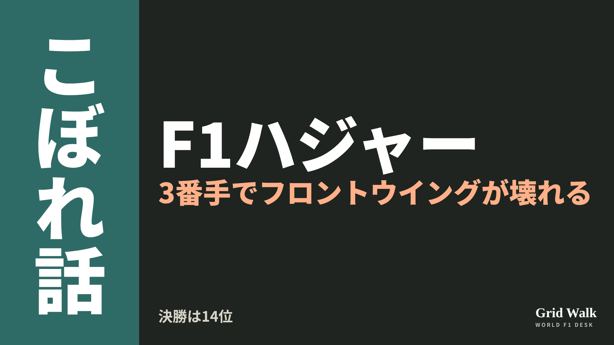<button class="cp dl" data-img="img/x_hadjar-front-wing-vegas-20261122.png" data-name="x_hadjar-front-wing-vegas-20261122.png">ダウンロード</button></li>
<li class="st"><div class="hd"><b>① noteをシェアするときの文</b></div><div class="bx" id="p6x0">ラスベガスGPで3番手を走っていたハジャー。再スタート直後にフロントウイングの片側が壊れ、最後尾まで下がって14位でした。noteにまとめました #F1jp #ハジャー #レッドブル</div><button class="cp" data-plain="p6x0">コピー</button></li>
<li class="st"><div class="hd"><b>② ①への返信</b></div><div class="bx" id="p6x1">ほかの海外記事も読みたい方は、F1 Grid Walkへ。
https://f1gridwalk.github.io/lens/hadjar-front-wing-vegas-20261122/?utm_source=x&amp;utm_campaign=hadjar-front-wing-vegas-20261122</div><button class="cp" data-plain="p6x1">コピー</button></li>
<li class="st"><div class="hd"><b>③ ②への返信</b></div><div class="bx" id="p6x2">毎日の海外F1ニュースは、日本語でこちらにまとめています。
https://f1gridwalk.github.io/</div><button class="cp" data-plain="p6x2">コピー</button></li>
</ol></section><section class="part" id="p7"><h2><span class="tag">OFF GRID</span>ガスリー、前日に「ここで初めての点を」　アルピーヌはベガスで5位・6位</h2><p class="sub">サイトに公開：16:35</p><ol class="steps">
<li class="st im"><div class="hd"><span class="no">1</span><b>見出し画像</b><em>画像</em></div>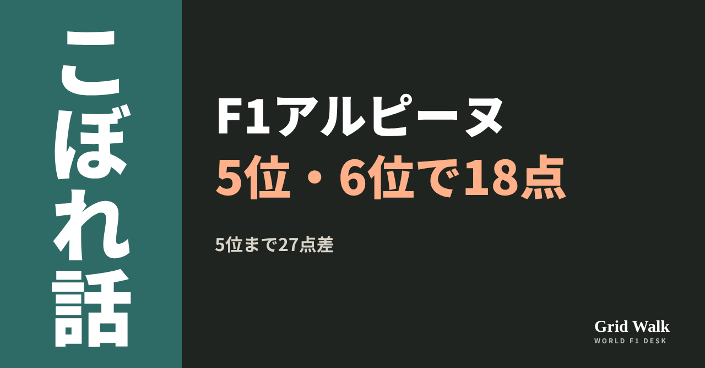<button class="cp dl" data-img="img/alpine-double-points-vegas-20261122.png" data-name="alpine-double-points-vegas-20261122_見出し画像.png">ダウンロード</button></li>
<li class="st"><div class="hd"><span class="no">2</span><b>タイトル</b></div><div class="bx" id="p7t">ガスリー、前日に「ここで初めての点を」　アルピーヌはベガスで5位・6位</div><button class="cp" data-plain="p7t">タイトルをコピー</button></li>
<li class="st"><div class="hd"><span class="no">3</span><b>本文</b></div><div class="bx tall" id="p7r"><p>ラスベガスでは毎回Q3に進むのに、まだ点を取ったことがない。アルピーヌのピエール・ガスリーは、決勝の前日にそう話していました。現地11月21日の第21戦ラスベガスGPで、ガスリーは5位、チームメートのフランコ・コラピントは6位でゴールし、アルピーヌは2台で18点を加えました。</p><p>元の記事へのリンクと、ブリアトーレがアルピーヌの今季を語った記事の要約はサイトで → <a href="https://f1gridwalk.github.io/lens/alpine-double-points-vegas-20261122/?utm_source=note&amp;utm_campaign=alpine-double-points-vegas-20261122">https://f1gridwalk.github.io/lens/alpine-double-points-vegas-20261122/?utm_source=note&amp;utm_campaign=alpine-double-points-vegas-20261122</a></p><h2>前日の目標は2台で点</h2><p>アルピーヌ公式の発表によると、予選はガスリーが9番手、コラピントが10番手でした。2台そろってQ3に進んだのは5戦ぶりです。ほかのドライバーの降格で、スタートは8番手と9番手になりました（Crash.net／イギリス）。ガスリーは予選のあと、こう話していました。</p><blockquote><p>「ラスベガスのQ3進出率100%の記録は続いている。あとは明日、ここで初めての点を取りたい」（ガスリー、アルピーヌ公式）</p></blockquote><blockquote><p>「コースの上でたくさんの戦いがあると思う。前にいるレーシングブルズを抜く方法を見つけないといけない」（ガスリー、アルピーヌ公式）</p></blockquote><p>コラピントも、自分たちは直線で速く、ほかの車の降格でグリッドが上がると話していました。マネージング・ディレクターのスティーブ・ニールセンも、予選のあとにこう述べていました。</p><blockquote><p>「出し切れなかったかもしれないが、それでも明日は点を持ち帰れるいい位置にいる。それが2台での目標だ」（ニールセン、アルピーヌ公式）</p></blockquote><p>スタートの前には、イギリスのGrandPrix247でポール・ベラスコが、8番手と9番手に並べたのはクルマがいい証拠だと書き、こう続けていました。</p><blockquote><p>「あのチームでは何かいいことが起きている。間違いなく上り調子だ」（ベラスコ、GrandPrix247／イギリス）</p></blockquote><h2>表彰台をうかがっての5位</h2><p>GrandPrix247によると、セーフティカーのあとの再スタートで、ガスリーは4番手、コラピントは9番手に並びました。ガスリーはその後、ノリス、アントネッリ、ピアストリとの上位争いに加わります。Crash.netは、ガスリーが何度も表彰台をうかがったうえでの5位だったと伝えています。優勝したフェルスタッペンとの差は約2.9秒、コラピントは約7.9秒でした（Crash.net）。</p><p>前日の言葉どおり、ガスリーはこの5位で、ラスベガスで初めての点を手にしました。コラピントも、9番グリッドから3つ順位を上げています。</p><h2>5位まで27点</h2><p>5位を争うレーシングブルズには、苦しい夜でした。GrandPrix247によると、リアム・ローソンは燃料漏れで7番グリッドにつけず、ピットレーンからスタートしました。Crash.netの結果では15位で、同じページでは、アルピーヌの2人がレーシングブルズの難しい一日を生かしたと書いています。</p><p>F1公式の順位では、アルピーヌはコンストラクターズ6位のまま87点。5位のレーシングブルズは114点で、差はレース前の45点から27点に縮まりました。残りは第22戦カタールと第23戦アブダビの2戦です。ラスベガスでエグゼクティブ・アドバイザーのフラビオ・ブリアトーレが今季を振り返った話は、サイトの要約 https://f1gridwalk.github.io/news/de-motorsporttotal-briatore-alpine/ に、今季のガスリーは読み解き https://f1gridwalk.github.io/topics/gasly-anything-else-is-no-pressure/ にあります。</p><p>編集部としては、この18点の重みは、レーシングブルズが1点も取れなかった夜に、2台とも取りこぼさずにゴールまで運んだところにあると見ています。2戦で27点差は小さくありませんが、前日に掲げた2台で点という目標をそのまま果たしたことで、5位争いは最終戦まで続きそうです。</p><p><strong>アルピーヌは残り2戦で、レーシングブルズとの27点差を逆転できると思いますか？</strong></p><p>━━━━━━━━━━</p><p><strong>F1 Grid Walk では、世界のF1ニュースを毎日日本語でまとめています。</strong></p><p>海外の記事の要約を、毎日載せています。</p><p><a href="https://f1gridwalk.github.io/">https://f1gridwalk.github.io/</a></p><p>ほかの海外記事も読みたい方は、F1 Grid Walkへ。</p><p><a href="https://f1gridwalk.github.io/lens/alpine-double-points-vegas-20261122/">https://f1gridwalk.github.io/lens/alpine-double-points-vegas-20261122/</a></p><p>━━━━━━━━━━</p><p><a href="https://www.crash.net/f1/race-report/1110730/1/max-verstappen-wins-pulsating-las-vegas-gp-ferraris-collide">出典：Crash.net（イギリス）</a></p><p><a href="https://www.crash.net/f1/results/1110729/1/formula-1-las-vegas-grand-prix-full-race-results">出典：Crash.net（イギリス）</a></p><p><a href="https://www.crash.net/f1/news/1110516/1/f1-2026-las-vegas-grand-prix-starting-grid-after-five-engine-penalties">出典：Crash.net（イギリス）</a></p><p><a href="https://www.grandprix247.com/formula-1-news/las-vegas-grand-prix-yo-yo-artist-max-verstappen-wins-fending-off-rivals-left-right-and-center">出典：GrandPrix247（イギリス）</a></p><p><a href="https://www.grandprix247.com/grand-prix-f1-weekend-news/las-vegas-grand-prix-grid-walk-i-have-a-feeling-this-one-is-going-to-be-a-cracker-of-a-race">出典：GrandPrix247（イギリス）</a></p><p><a href="https://media.alpinecars.com/2026-formula-one-las-vegas-grand-prix-friday/?lang=eng">出典：アルピーヌ公式（フランス）</a></p><p><a href="https://www.formula1.com/en/results/2026/team">出典：F1公式サイト（イギリス）</a></p></div><button class="cp" data-rich="p7r">本文をコピー</button></li>
<li class="st"><div class="hd"><span class="no">4</span><b>ハッシュタグ</b></div><div class="bx" id="p7h">#F1 #F1jp #アルピーヌ #ガスリー #コラピント #ラスベガスGP #コンストラクターズ #F1こぼれ話 #OFFGRID</div><button class="cp" data-plain="p7h">タグをコピー</button></li>
</ol><h3 class="xh">X</h3><ol class="steps">
<li class="st im"><div class="hd"><b>X用の画像</b><em>画像</em></div>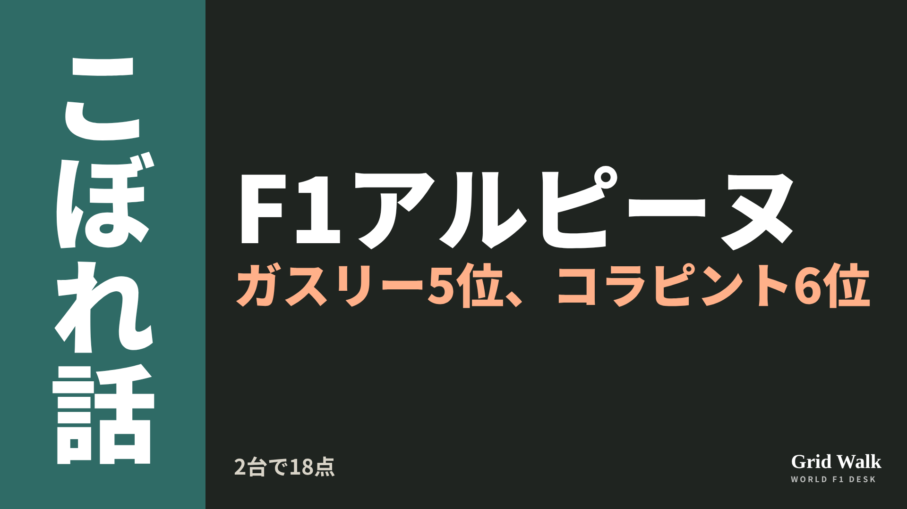<button class="cp dl" data-img="img/x_alpine-double-points-vegas-20261122.png" data-name="x_alpine-double-points-vegas-20261122.png">ダウンロード</button></li>
<li class="st"><div class="hd"><b>① noteをシェアするときの文</b></div><div class="bx" id="p7x0">ラスベガスGPでアルピーヌのガスリーが5位、コラピントが6位。2台で18点を加え、5位のレーシングブルズとの差は27点に縮まりました。noteにまとめました #F1jp #アルピーヌ #ガスリー</div><button class="cp" data-plain="p7x0">コピー</button></li>
<li class="st"><div class="hd"><b>② ①への返信</b></div><div class="bx" id="p7x1">ほかの海外記事も読みたい方は、F1 Grid Walkへ。
https://f1gridwalk.github.io/lens/alpine-double-points-vegas-20261122/?utm_source=x&amp;utm_campaign=alpine-double-points-vegas-20261122</div><button class="cp" data-plain="p7x1">コピー</button></li>
<li class="st"><div class="hd"><b>③ ②への返信</b></div><div class="bx" id="p7x2">毎日の海外F1ニュースは、日本語でこちらにまとめています。
https://f1gridwalk.github.io/</div><button class="cp" data-plain="p7x2">コピー</button></li>
</ol></section><section class="part" id="p8"><h2><span class="tag">OFF GRID</span>ラスベガスで消えた3台　アルボンはスタートもできず</h2><p class="sub">サイトに公開：16:36</p><ol class="steps">
<li class="st im"><div class="hd"><span class="no">1</span><b>見出し画像</b><em>画像</em></div>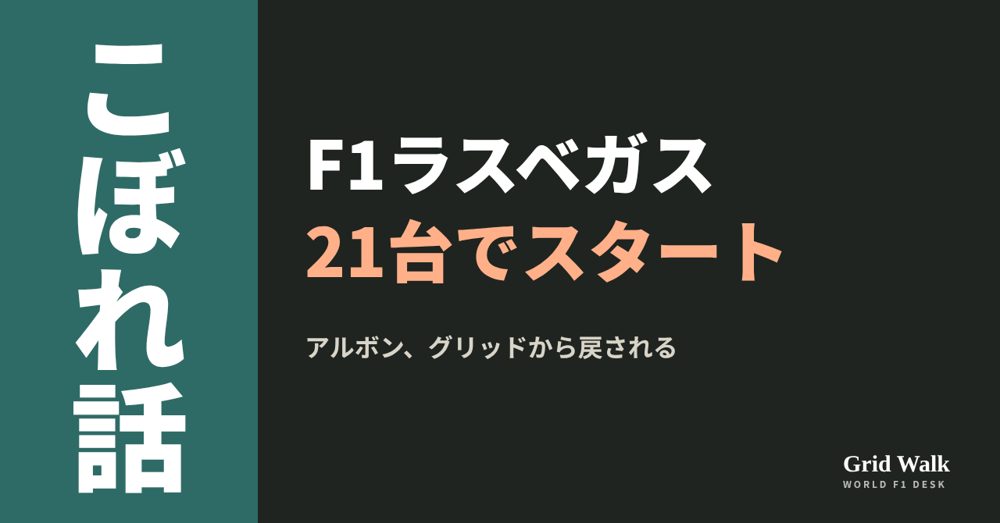<button class="cp dl" data-img="img/albon-dns-perez-camara-20261122.png" data-name="albon-dns-perez-camara-20261122_見出し画像.png">ダウンロード</button></li>
<li class="st"><div class="hd"><span class="no">2</span><b>タイトル</b></div><div class="bx" id="p8t">ラスベガスで消えた3台　アルボンはスタートもできず</div><button class="cp" data-plain="p8t">タイトルをコピー</button></li>
<li class="st"><div class="hd"><span class="no">3</span><b>本文</b></div><div class="bx tall" id="p8r"><p>第21戦ラスベガスGPの決勝で、ウィリアムズのアレクサンダー・アルボンはスタートできませんでした。FIAの最終スターティンググリッドでは14番手。22台のうち、走り出したのは21台です。キャデラックのセルジオ・ペレスと、レーシングブルズのアービッド・リンドブラッドも、途中でレースを終えました。</p><p>元の記事とFIAの文書へのリンク、関連コラムへの案内はサイトで → <a href="https://f1gridwalk.github.io/lens/albon-dns-perez-camara-20261122/?utm_source=note&amp;utm_campaign=albon-dns-perez-camara-20261122">https://f1gridwalk.github.io/lens/albon-dns-perez-camara-20261122/?utm_source=note&amp;utm_campaign=albon-dns-perez-camara-20261122</a></p><h2>気温12度で、ブレーキが熱すぎた</h2><p>イギリスのAutosportによると、アルボンのクルマには、気温12度の寒さにもかかわらず、ブレーキが熱くなりすぎる問題が出ました。イギリスのGrandPrix.comは、クルマがグリッドから外され、ピットへ戻されたと伝えています。ブラジルのGrande Prêmio（英語版）が伝えたウィリアムズの声明は、こうです。</p><blockquote><p>「グリッドへ向かう途中で受けた熱による損傷は、直すことができなかった」「アレックスが走れなかったことに、本当にがっかりしている。原因を調べる」（ウィリアムズの声明、Grande Prêmio／ブラジル）</p></blockquote><p>もう1台のカルロス・サインツは、10グリッド降格で20番手からのスタートでした（FIA）。それでも8位に入り、4点を持ち帰っています（Autosport）。F1公式によると、ウィリアムズはコンストラクターズ9位のまま16点になり、10位アストンマーティン（7点）との差は9点です。降格の話はコラム https://f1gridwalk.github.io/lens/sainz-vegas-grid-penalty-20261121/ で紹介しました。</p><h2>前後に並んだ2台が、14コーナーで</h2><p>グリッドでは、ハースのラファエル・カマラが15番手、ペレスが16番手と、すぐ前後に並んでいました（FIA）。GrandPrix.comによると、14コーナーでペレスが抜こうとしたところで2台が接触し、ペレスのキャデラックは壁に当たって止まりました。カマラは走り続け、16位でゴールしています。イギリスのMotorsport Weekは、このときセーフティカーが出たのは19周目だったと書いています。</p><p>GrandPrix.comによると、スチュワードはこの接触をレースのあとに調べることにし、ペレスとカマラの2人を呼び出しました。カマラの読み解きは https://f1gridwalk.github.io/topics/camara-lot-to-learn/ で。</p><p>ペレスは前日の予選のあと、チームの発表でこう話していました。</p><blockquote><p>「チームとして力を合わせて、すべてを最大限に引き出すことが重要だ。大事なのは明日の結果なのだから」（ペレス、キャデラックF1チーム公式／アメリカ）</p></blockquote><h2>5番手のルーキーは、セーフティカーの後ろで</h2><p>リンドブラッドは5番手からのスタートでした。F1公式によると、これまででいちばん前のグリッドです。Motorsport Weekによると、スタートのあとも5番手を守り、12周目にメルセデスのアンドレア・キミ・アントネッリに抜かれました。</p><p>GrandPrix.comによると、セーフティカーが出ている間、リンドブラッドはタイヤを温めている最中にスピンして壁に触れ、止まったクルマはマーシャルが押してどかしました。チームメイトのリアム・ローソンは、燃料漏れの修理のためピットレーンからスタートし、15位でした（GrandPrix.com）。F1公式によると、レーシングブルズはコンストラクターズ5位、114点です。</p><p>編集部としては、この夜のウィリアムズとレーシングブルズの痛手は、どちらもバトルの外で起きたと見ています。アルボンはグリッドへ向かう途中、リンドブラッドはセーフティカーの後ろでした。</p><p><strong>走る前に終わったアルボン、接触で終わったペレス、セーフティカーの後ろで止まったリンドブラッド。あなたがいちばん惜しいと思うのは、誰の夜ですか？</strong></p><p>━━━━━━━━━━</p><p><strong>F1 Grid Walk では、世界のF1ニュースを毎日日本語でまとめています。</strong></p><p>海外の記事の要約を、毎日載せています。</p><p><a href="https://f1gridwalk.github.io/">https://f1gridwalk.github.io/</a></p><p>ほかの海外記事も読みたい方は、F1 Grid Walkへ。</p><p><a href="https://f1gridwalk.github.io/lens/albon-dns-perez-camara-20261122/">https://f1gridwalk.github.io/lens/albon-dns-perez-camara-20261122/</a></p><p>━━━━━━━━━━</p><p><a href="https://www.autosport.com/f1/news/f1-las-vegas-gp-report/10876677/">出典：Autosport（イギリス）</a></p><p><a href="https://www.grandprix.com/races/las-vegas-gp-2026-race-notes.html">出典：GrandPrix.com（イギリス）</a></p><p><a href="https://grandepremio.com/en/f1/lawson-and-albon-face-las-vegas-f1-start-scare-as-cars-hit-pre-race-problems/">出典：Grande Prêmio（英語版）（ブラジル）</a></p><p><a href="https://www.motorsportweek.com/2026/11/22/max-verstappen-wins-f1-las-vegas-gp/">出典：Motorsport Week（イギリス）</a></p><p><a href="https://www.cadillacf1team.com/news/2026-las-vegas-grand-prix-qualifying-report">出典：キャデラックF1チーム公式（アメリカ）</a></p><p><a href="https://www.fia.com/system/files/decision-document/2026_las_vegas_grand_prix_-_final_starting_grid.pdf">出典：FIA（国際）</a></p><p><a href="https://www.formula1.com/en/latest/article/official-grid-who-starts-where-in-las-vegas-after-multiple-penalties.1PRdR9E7qYRjHoRh1NlDR4">出典：F1公式サイト（イギリス）</a></p><p><a href="https://www.formula1.com/en/results/2026/team">出典：F1公式サイト（イギリス）</a></p></div><button class="cp" data-rich="p8r">本文をコピー</button></li>
<li class="st"><div class="hd"><span class="no">4</span><b>ハッシュタグ</b></div><div class="bx" id="p8h">#F1 #F1jp #ラスベガスGP #アルボン #ウィリアムズ #ペレス #キャデラック #カマラ #ハース #リンドブラッド #レーシングブルズ #F1こぼれ話 #OFFGRID</div><button class="cp" data-plain="p8h">タグをコピー</button></li>
</ol><h3 class="xh">X</h3><ol class="steps">
<li class="st im"><div class="hd"><b>X用の画像</b><em>画像</em></div>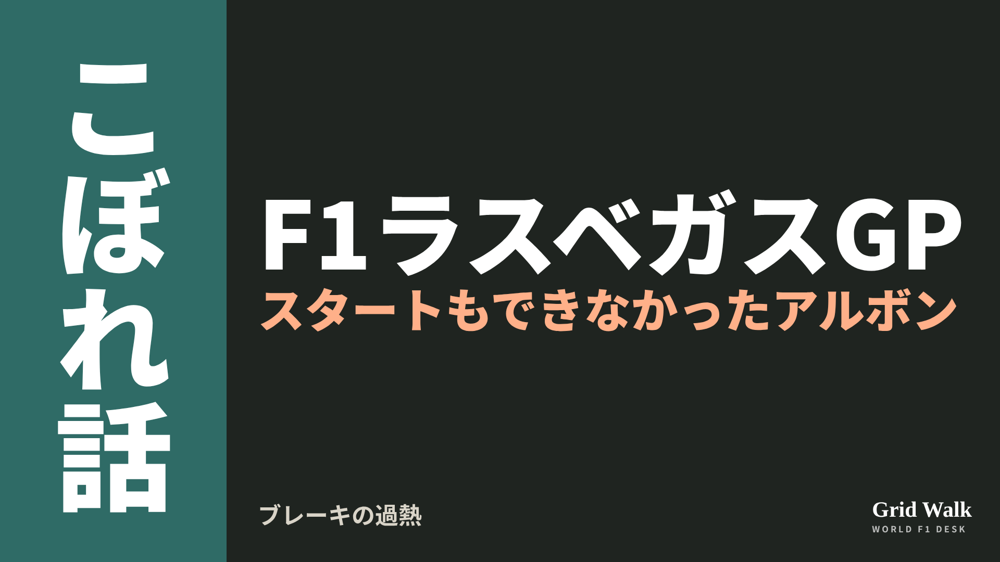<button class="cp dl" data-img="img/x_albon-dns-perez-camara-20261122.png" data-name="x_albon-dns-perez-camara-20261122.png">ダウンロード</button></li>
<li class="st"><div class="hd"><b>① noteをシェアするときの文</b></div><div class="bx" id="p8x0">ラスベガスGPの決勝は22台のうち21台で始まりました。アルボンはブレーキの熱の損傷で走れず、ペレスはカマラと接触して壁へ。リンドブラッドもセーフティカーの後ろでスピン。noteにまとめました #F1jp #ラスベガスGP</div><button class="cp" data-plain="p8x0">コピー</button></li>
<li class="st"><div class="hd"><b>② ①への返信</b></div><div class="bx" id="p8x1">ほかの海外記事も読みたい方は、F1 Grid Walkへ。
https://f1gridwalk.github.io/lens/albon-dns-perez-camara-20261122/?utm_source=x&amp;utm_campaign=albon-dns-perez-camara-20261122</div><button class="cp" data-plain="p8x1">コピー</button></li>
<li class="st"><div class="hd"><b>③ ②への返信</b></div><div class="bx" id="p8x2">毎日の海外F1ニュースは、日本語でこちらにまとめています。
https://f1gridwalk.github.io/</div><button class="cp" data-plain="p8x2">コピー</button></li>
</ol></section></main><script>
function done(b,msg){const t=b.dataset.t||b.textContent;b.dataset.t=t;b.classList.add('ok');b.textContent=msg||'コピーしました';setTimeout(()=>{b.classList.remove('ok');b.textContent=t},2000)}
function selectEl(el){const r=document.createRange();r.selectNodeContents(el);const s=getSelection();s.removeAllRanges();s.addRange(r)}
async function rich(el,b){
  try{await navigator.clipboard.write([new ClipboardItem({'text/html':new Blob([el.innerHTML],{type:'text/html'}),'text/plain':new Blob([el.innerText],{type:'text/plain'})})]);done(b);return}catch(e){}
  selectEl(el);let ok=false;try{ok=document.execCommand('copy')}catch(e){}
  if(ok){getSelection().removeAllRanges();done(b)}else{done(b,'選択しました。コピーしてください')}}
async function plain(el,b){
  try{await navigator.clipboard.writeText(el.innerText);done(b);return}catch(e){}
  selectEl(el);let ok=false;try{ok=document.execCommand('copy')}catch(e){}
  if(ok){getSelection().removeAllRanges();done(b)}else{done(b,'選択しました。コピーしてください')}}
let dlns=null;(async()=>{try{dlns=await window.claude?.use?.("downloads")}catch(e){dlns=null}})();
async function img(src,b){
  b.dataset.t=b.dataset.t||b.textContent;
  if(!dlns){try{dlns=await window.claude?.use?.("downloads")}catch(e){}}
  if(!dlns){b.textContent='ダウンロードできませんでした';setTimeout(()=>{b.textContent=b.dataset.t},3500);return}
  try{const blob=await fetch(src).then(r=>r.blob());b.textContent='保存の確認を開いています…';
    await dlns.save({filename:b.dataset.name,data:blob});done(b,'ダウンロードしました')}
  catch(e){const c=e&&e.code;b.textContent=c==='declined'?'キャンセルしました':c==='rate_limited'?'少し待ってからもう一度押してください':'ダウンロードできませんでした';setTimeout(()=>{b.textContent=b.dataset.t},3500)}}
document.querySelectorAll('.cp').forEach(b=>b.addEventListener('click',()=>{
  if(b.dataset.rich)rich(document.getElementById(b.dataset.rich),b);
  else if(b.dataset.plain)plain(document.getElementById(b.dataset.plain),b);
  else img(b.dataset.img,b)}));
</script>